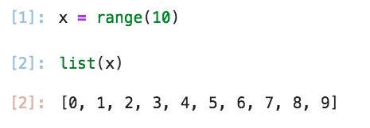
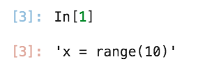
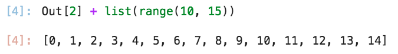

IPython#
IPython es un ambiente computacional interactivo para Python. En esta sección se explica brevemente algunas funcionalidades de IPython.
Note
Para más información visitar la documentación de IPython.
IPython forma parte de manera nativa en Jupyter.
Autocompletar#
Al utilizar IPython o JupyterNotebooks se puede autocompletar el código mientras se escribe utilizando la tecla tab .
pattern<tab>: Si se utiliza mientras se está escribiendo un nombre sugirirá nombres de variables, palabras reservadas o funciones disponibles que empiecen por el patrónpatternen el ambiente global.object.<tab>: Al utilizarse con objetos sugirirá atributos y métodos del objetoobject.module.tab>: Al utilizarse con modulos sugerirá clases, funciones y constantes del módulomodule.funtion(patttern<tab>): Al utilizar dentro de una función y un patrón sugerirá argumentos defunctionque empiecen conpattern.from library import patttern<tab>: Al utilizar mientras se importa una librería sugerirá funciones, clases o módulos que empiezan por el patrónpattern.import <tab>: Al utilizar con la palabra reservaimport, mostrará todas las librerías disponibles para importar.
Obtener ayuda#
Mientras se programa en IPython se puede obtener ayuda sobre los módulos, funciones y clases con los que se está trabajando
Obtener ayuda de comando mágico: Si se quiere obtener ayuda de Comandos mágicos utilizar un signo de integorración ? al final del comando.
# Obtener ayuda sobre la clase list
%command_name?
Object `%command_name` not found.
command_name es el nombre del comando mágico.
Obtener ayuda de un objeto: Si se quiere obtener ayuda de un objeto o sobre un objeto utilizar un signo de integorración ? al final del nombre del objeto.
# Obtener ayuda sobre la clase list
list?
Recuperar información de una función: Para recuperar la definición, el docstring, los parámetros, entre otros datos de una función se pueden utilizar dos signos de interrogación ?? al final del nombre de la función:
# Recuperar información de una función
print??
Buscar funciones, clases, métodos, constantes, etc.: Se puede utiliza un signo de interrogación ? y wildcards para enlistar todos los objetos que cumplan determinado patrón, para ello se utiliza el wildcard * que representa cualquier caracter una o más veces:
# Enlistar todas las funciones que llevan `mean` en numpy
np.*mean*?
Impresión (display)#
IPython cuenta con la función display() que permite imprimir objetos con un mejor formato de lo que lo haría print(), así como también permite renderizar fórmulas de LaTeX y elementos HTML.
Note
Por default en IPython se utiliza display() para imprimir objetos por lo que no es necesario usarlo explícitamente.
Algunos objetos que tienen un mejor formato al ser imprimidos por display() son los DataFrame de pandas y las gráficas de Matplotlib.pyplot.
Ejemplo: A continuación veremos la diferencia entre print() y display() al imprimir un DataFrame.
# importar libreria
import pandas as pd
# Crear objeto
df = pd.DataFrame({'col1': [1, 2], 'col2': ['a', 'b']})
Imprimir objeto con print()
# Imprimir df
print(df)
col1 col2
0 1 a
1 2 b
Imprimir con display()
# Imprimir df
display(df)
| col1 | col2 | |
|---|---|---|
| 0 | 1 | a |
| 1 | 2 | b |
Renderizar LaTeX#
Para poder imprimir fórmulas de LaTeX es necesario importar de IPython.display la función Math() y utilizar esta función dentro de display().
# Importar función
from IPython.display import Math
# fórmula de LaTeX
latex_formula = r'\frac{1}{2} \cdot \sqrt{3x-1} + \left( y^2 + 1 \right)'
# Renderizar fórmulas de LaTeX
display(Math(latex_formula))
Importante: Notar que la cadena que contenga la fórmula de LaTeX debe de ser una cadena cruda (raw string).
Renderizar HTML#
Para poder imprimir contenido de HTML es necesario importar de IPython.display la función HTML() y utilizar esta función dentro de display().
# Importar función
from IPython.display import HTML
# Contenido HTML
html_content = "<h1>Hello, IPython!</h1>"
# Renderizar elementos HTML
display(HTML(html_content))
Hello, IPython!
In y Out#
Al trabajar con IPython cada sentencia escrita en la consola y cada resultado se almacenan en los objetos In del tipo list y Out del tipo dict. Como se muestra en la siguiente imagen:

Tener en cuenta las siguientes características:
In: En In se almacena las sentencias utilizadas en IPython como
str. Para acceder a una sentencia basta con utilizar el índice de In.

Out: En Out se almacena los resultados de los In (en caso de que haya). Es un diccionario cuyas llaves son el índice del Out y cuyos valores son el resultado del Out. Se puede utilizar este objeto para manipular los resultados posteriormente.

Note
Se puede acceder a los últimos tres resultados de Out con guiones bajos:
‘_’: Último valor en Out.
‘__’: Penúltimo valor en Out.
‘___’: Antepenúltimo valor en Out.
Alternativamente se puede indicar un Out específico con un guión bajo y el índice del Out:
__Ind_
Utilizar comandos de shell, _conda o pip#
Para poder utilizar comandos de shell conda o pip desde IPython es recomendado primero importar la librería sys y cada comando debe ir precedido por un !.
Caution
El altamente recomendado importar la librería sys antes de ejecutar un comando de terminal en IPython.
Tip
Muchos comandos shell tienen comandos mágicos equivalente. Revisar Manejo de Archivos y Directorios y Sistema y Shell.
# Importar sys
import sys
# Comando de shell
!ls
# Comando de pip
!pip install pandas
# Comando de conda
!conda install pandas
Ejemplo:
En este ejemplo se imprime información de la librería pandas con pip.
# Importar sys
import sys
# Mostrar información de pandas
!pip show pandas
Name: pandas
Version: 2.2.0
Summary: Powerful data structures for data analysis, time series, and statistics
Home-page: https://pandas.pydata.org
Author:
Author-email: The Pandas Development Team <pandas-dev@python.org>
License: BSD 3-Clause License
Copyright (c) 2008-2011, AQR Capital Management, LLC, Lambda Foundry, Inc. and PyData Development Team
All rights reserved.
Copyright (c) 2011-2023, Open source contributors.
Redistribution and use in source and binary forms, with or without
modification, are permitted provided that the following conditions are met:
* Redistributions of source code must retain the above copyright notice, this
list of conditions and the following disclaimer.
* Redistributions in binary form must reproduce the above copyright notice,
this list of conditions and the following disclaimer in the documentation
and/or other materials provided with the distribution.
* Neither the name of the copyright holder nor the names of its
contributors may be used to endorse or promote products derived from
this software without specific prior written permission.
THIS SOFTWARE IS PROVIDED BY THE COPYRIGHT HOLDERS AND CONTRIBUTORS "AS IS"
AND ANY EXPRESS OR IMPLIED WARRANTIES, INCLUDING, BUT NOT LIMITED TO, THE
IMPLIED WARRANTIES OF MERCHANTABILITY AND FITNESS FOR A PARTICULAR PURPOSE ARE
DISCLAIMED. IN NO EVENT SHALL THE COPYRIGHT HOLDER OR CONTRIBUTORS BE LIABLE
FOR ANY DIRECT, INDIRECT, INCIDENTAL, SPECIAL, EXEMPLARY, OR CONSEQUENTIAL
DAMAGES (INCLUDING, BUT NOT LIMITED TO, PROCUREMENT OF SUBSTITUTE GOODS OR
SERVICES; LOSS OF USE, DATA, OR PROFITS; OR BUSINESS INTERRUPTION) HOWEVER
CAUSED AND ON ANY THEORY OF LIABILITY, WHETHER IN CONTRACT, STRICT LIABILITY,
OR TORT (INCLUDING NEGLIGENCE OR OTHERWISE) ARISING IN ANY WAY OUT OF THE USE
OF THIS SOFTWARE, EVEN IF ADVISED OF THE POSSIBILITY OF SUCH DAMAGE.
Location: /Library/Frameworks/Python.framework/Versions/3.11/lib/python3.11/site-packages
Requires: numpy, python-dateutil, pytz, tzdata
Required-by: bokeh, recordlinkage, seaborn, statsmodels
Comandos mágicos#
Los comandos mágicos, son comandos especiales precedidos por % que permiten realizar diversas acciones, a continuación se enlistan algunos comandos y su descripción.
Note
Para una lista completa y más información sobre los comandos mágicos usar el comando mágico %magic y %lsmagic Además visitar la documentación de IPython.
Gestión del Entorno y Configuración#
Comandos para configurar el comportamiento de IPython y su entorno.
Comando |
Descripción |
|---|---|
Habilita o deshabilita la espera automática en async. |
|
Controla si las llamadas a funciones se ejecutan automáticamente. |
|
Permite ejecutar comandos mágicos sin el prefijo |
|
|
Configura el guardado automático de notebooks. |
Muestra y configura opciones de IPython. |
|
Cambia el esquema de colores de IPython. |
|
Configura la integración con interfaces gráficas. |
|
Configura la integración con Matplotlib. |
|
Importa NumPy y Matplotlib en el espacio de nombres. |
|
Establece la precisión de los números flotantes en la salida. |
|
Muestra una referencia rápida de IPython. |
|
Configura el nivel de detalle de los rastreos de errores. |
Manejo de Archivos y Directorios#
Comandos para navegar y gestionar archivos y directorios.
Note
La mayoría de los comandos de esta sección los alias de comandos de cmd que pueden variar dependiendo del sistema operativo. Para más información consultar %alias?
Comando |
Descripción |
|---|---|
Gestiona accesos directos a directorios. |
|
|
Muestra el contenido de un archivo. |
Cambia de directorio. |
|
|
Copia archivos o directorios. |
|
Muestra el historial de directorios. |
|
Lista archivos en formato detallado. |
|
Muestra el contenido de un archivo de manera paginada. |
|
Lista funciones en un archivo. |
|
Lista variables en un archivo. |
|
Lista el código de una función o clase en detalle. |
|
Lista archivos en el directorio actual. |
|
Crea un directorio. |
|
Mueve archivos o directorios. |
Muestra el directorio actual. |
|
Muestra el contenido de un archivo con resaltado de sintaxis. |
|
|
Elimina archivos. |
|
Elimina directorios. |
Historial y Macros#
Comandos para gestionar y reutilizar comandos previos.
Comando |
Descripción |
|---|---|
Muestra el historial de directorios. |
|
|
Muestra el historial de comandos. |
Similar a |
|
Define una macro a partir de comandos previos. |
|
Recupera un comando previo. |
|
|
Repite el último comando ingresado. Igual que |
Reejecuta un comando del historial. |
|
Guarda comandos en un archivo. |
|
|
Guarda variables en un almacenamiento persistente. |
Comando %history#
%history permite imprimir n cantidad de elementos de los objetos In y Out:
# Sintaxis de llamada
%history [-n] [-o] [-p] [-t] [-f FILENAME] [-g [PATTERN ...]]
[-l [LIMIT]] [-u]
[range ...]
-n: Para indicar que se impriman los In.
-o: Para indicar que se impriman los Out.
range: Indica cuál línea o cuál rango de líneas imprimir, si es un rango se debe definir como
n-m.
Ejemplos:
# Fila 4 de In
%history -n 4
# Fila 4 a 6 de In
%history -n 4-6
# Fila 4 a 6 de In y Out
%history -n -o 4-
Depuración y Perfilado de Código#
Comandos para depurar y analizar el rendimiento del código.
Comando |
Descripción |
|---|---|
Inicia el depurador en la última excepción. |
|
Ajusta la salida para pruebas con doctest. |
|
Activa el depurador en caso de error. |
|
Perfila la ejecución de una función o script. |
|
Muestra el traceback de la última excepción. |
|
Mide el tiempo de ejecución de una línea de código. |
|
Mide el tiempo de ejecución repetida de una línea. |
Comando %debug#
%debug activa el depurador de errores interactivo al ocurrir un error o una excepción. Para ello se utiliza el comando %debug, inmediatamente después de que occura un error. Al ejecutar el comando se iniciará una sesión ipdb (se puede identificar por que al inicio de cada línea aparece ipdb>) que permitirá de manera interactiva analizar el código para encontrar el error.
# Sintaxis de llamada
%debug [--breakpoint FILE:LINE] [statement ...]
Tip
Se puede indicar que se inicialice ipdb automáticamente al suceder un error usando %pdb on.
Existen algunas instrucciones especiales para interactuar en ipdb (estas instrucciones son las mismas que las del depurador pdb):
# Reanuda la ejecución del programa hasta el próximo breakpoint
ipdb> continue
# Ejecuta la siguiente línea sin entrar en llamadas a funciones
ipdb> next
# Imprimir el contenido de una variable o expresión
ipdb> pp expression
# Salir de la sesión de debugging
ipdb> quit
Timing#
Se refiere al proceo de identificar el tiempo de ejecución de una línea o un bloque de líneas. Existen diversos comandos mágicos que pueden ayudar a realizar dichas tareas:
%time expression: Tiempo de la ejecución de una sola sentencia. Ideal para comandos que duran más tiempo en ejecurse y que realizar la operación de manera iterativa no sesgue los resultados, como con ordenar.
%timeit expression: Tiempo de ejecución de una sola línea de manera iterativa.
%%timeit expression: Tiempo de ejecución de un bloque de código, por ejemplo, una celda de un Jupyter Notebook. Debe ser la primer sentencia en la celda.
Uso de %timeit y %%timeit:
Ambos se utilizan para calcular el tiempo de ejecución de una línea (%timeit) o de un bloque de líneas (%%timeit), la manera como lo calcula es que ejecuta la misma línea o bloque de línea en varias ejecuciones y en cada ejecución corre el código de manera iterativa para estimar los tiempos de ejecución.
# Sintaxis de llamada
%timeit [-n<N> -r<R> [-t|-c] -q -p<P> -o] statement
%%timeit [-n<N> -r<R> [-t|-c] -q -p<P> -o] setup_code
-n<N>: Especifica el número de iteraciones (cúantas veces será ejecutado el código en cada ejecución).
-r<R>: Especifica el número de ejecuciones/runs.
-o: Para indicar que se retorne un objeto
TimeitResult, el cual se puede almacenar en una variable.
Para almacenar los resultados en un TimeitResult se puede hacer de la siguiente manera:
# Almecenar resultado en variable
list_comp = %timeit -o [i**2 for i in range(1000)]
Posteriormente se puede acceder a las propiedades de
TimeitResult:TimeitResult.timings-list: Lista de los tiempos de cada ejecución (run).TimeitResult.best-float: Mejor tiempo.TimeitResult.worst-float: Peor tiempo.
Profiling#
Se refiere al proceo de identificar las áreas que se pueden optimizar en una línea o un bloque de líneas, como la memoria consumida o el tiempo de ejecución. Existen diversos comandos mágicos que pueden ayudar a realizar dichas tareas:
%prun expression: Ejecuta código con el profiler.
%lprun: Ejcuta línea por línea con el profiler. Es más completo que%prun. Forma parte de la extensión line_profiler. Importante: Es necesario instalarlo.%mprun: Ejecuta código con el profiler de memoria línea por línea. Forma parte de la extensiónmemory_profiler. Importante: Es necesario instalarlo.
Las extensiones externas a IPython se tienen que cargar antes de poder usarlas.
# Cargar extensión
%load_ext line_profiler
%load_ext memory_profiler
# Utilizar comando
%lprun -f function_name function_name(args)
%mprun -f function_name function_name(args)
La flag -f se utiliza para indicar que se perfilará una función.
Es necesario primero poner solo el nombre de la función y después la llamada a la función.
Gestión de Extensiones y Módulos#
Comandos para cargar, descargar y recargar extensiones en IPython.
Comando |
Descripción |
|---|---|
Carga una extensión en IPython. |
|
Recarga una extensión ya cargada. |
|
Descarga una extensión de IPython. |
Ejecución de Código y Scripts#
Comandos para ejecutar scripts y código desde IPython.
Comando |
Descripción |
|---|---|
Envuelve código para mejor visualización. |
|
|
Edita una celda o archivo en un editor externo. |
Similar a |
|
Carga código desde un archivo o URL. |
|
Carga y ejecuta un archivo Python. |
|
Exporta el historial a un notebook. |
|
Muestra la salida en formato paginado. |
|
Sube código a un pastebin. |
|
Muestra el código fuente de un objeto. |
|
Ejecuta un script en IPython. |
Comando %run#
Ejecuta un script de Python en IPython, ya sea en la consola o en una celda de Jupyter.
# Sintaxis de llamada
%run [-n -i -e -G]
[( -t [-N<N>] | -d [-b<N>] | -p [profile options] )]
( -m mod | filename ) [args]
Patrones comunes:
# Ejecución básica
%run path/to/my_script.py
# Ejecución en debug mode
%run -d path/to/my_script.py
# Ejecución y mantener el namespace después de la ejecución
%run -i path/to/my_script.py
Se debe indicar la ruta al archivo en relación con el directorio actual en IPython.
Al ejecutar un script en modo debug se abrirá una sesión de ipdb. Ver Comando %debug para más información.
Note
La ejecución en debug mode permite ejecutar el código línea por línea. Para ello es recomendado añadir breakpoints al script con la función breakpoint() (función built-in):
# Añadir breakpoints
def add(a, b):
result = a + b
breakpoint()
return result
Al ejecutar el script, la ejecución se dentendrá después del breakpoint y se entrará a la sesión ipdb donde se podrá ejecutar el código línea por línea e interactuar con los variables.
Sistema y Shell#
Comandos para interactuar con el sistema operativo.
Comando |
Descripción |
|---|---|
Define un alias para un comando del sistema. |
|
Define un alias para un comando mágico. |
|
Ejecuta comandos de conda dentro de IPython. |
|
Mata procesos en segundo plano. |
|
Muestra la lista de comandos mágicos disponibles. |
|
|
Muestra el manual de un comando. |
Muestra información sobre los comandos mágicos disponibles. |
|
Usa Mamba para gestionar paquetes. |
|
Usa Micromamba para gestionar paquetes. |
|
Ejecuta comandos de pip dentro de IPython. |
|
Recarga los comandos del sistema en IPython. |
|
Ejecuta comandos del sistema y almacena la salida en una variable. OBSOLETO. Usar |
|
Define variables de entorno. |
|
Similar a |
|
Ejecuta comandos del sistema. |
|
Elimina un alias definido. |
|
Corre el paquete uv para admnistrar paquetes dentro del kernel actual. |
Inspección de Variables y Objetos#
Comandos para ver información sobre variables y objetos en el entorno.
Comando |
Descripción |
|---|---|
Muestra las variables de entorno. |
|
Muestra la firma de una función. |
|
Muestra la documentación de un objeto. |
|
Muestra el archivo fuente de un objeto. |
|
Muestra información sobre un objeto. |
|
Similar a |
|
Muestra la representación de un objeto con formato. |
|
Busca objetos en el entorno. |
|
Lista las variables definidas en el entorno. |
|
Similar a |
|
Muestra información detallada sobre las variables. |
Limpieza y Reinicio del Entorno#
Comandos para limpiar variables, sesiones y resetear IPython.
Comando |
Descripción |
|---|---|
|
Limpia la pantalla de IPython. |
Desactiva el registro de comandos. |
|
Activa el registro de comandos. |
|
Inicia el registro en un archivo. |
|
Muestra el estado del registro. |
|
Detiene el registro. |
|
Regresa al directorio anterior. |
|
Guarda el directorio actual y cambia a otro. |
|
Borra todas las variables del entorno. |
|
Borra variables específicas. |
|
Elimina una variable del entorno. |
Shorcuts#
A continución se enlistan algunos shortcuts del teclado al trabajar con IPython.
Atajo |
Descripción |
|---|---|
|
Busca los comandos anteriores en el historial |
|
Busca los comandos posteriores en el historial |
|
Permite buscar en el historial escribiendo texto |
|
Interrumpe la ejecución actual |
|
Mueve el cursor al inicio de la línea |
|
Mueve el cursos al final de la línea |
|
Elimina desde donde está el cursor hasta el final de la línea |
|
Elimina el texto desde el inicio de la línea hasta el cursor |
|
Limpia la pantalla (no elimina el historial) |
|
Elimina el caracter inmediato a la derecha respecto al cursor. |
|
Transpone dos caracteres |
|
Mueve el cursor una posición a la derecha |
|
Mueve el cursor una posición a la izquierda |
Anexos#
A continuación se enlistan los comandos del depurador ipdb.
Note
Algunos comandos se pueden llamar por una sola letra o por una palabra, para identificar estos comandos vendrá entre paréntesis el resto de la palabra, por ejemplo q(uit), se puede llamar tanto por q como por quit.
Caution
La clasificación en esta lista puede estar incompleta. Se clasificaron solo los comandos más importantes, pero es posible que haya comandos que entren en alguna categoría específica pero se hayan colocado en la categoría “Otros”.
Comando |
Descripción |
|---|---|
Control de ejecución |
|
Reanuda la ejecución del programa hasta el próximo breakpoint. |
|
Ejecuta la siguiente línea sin entrar en llamadas a funciones. |
|
Sale del depurador y termina la ejecución del programa. |
|
Continúa la ejecución hasta que la función actual retorne. |
|
Ejecuta la siguiente línea, entrando en funciones si es necesario. |
|
Inspección del código |
|
l(ist) |
Muestra el código fuente de la función actual. |
p |
Imprime el valor de una variable o expresión. |
pp |
Imprime una variable con formato legible ( |
whatis |
Muestra el tipo de una variable u objeto. |
Muestra el stack trace actual. |
|
Manejo de breakpoints |
|
b(reak) |
Con un argumento de lineno, establece un breakpoint en la línea lineno o en una función en el archivo actual. |
cl(ear) |
Elimina uno o más breakpoints en el archivo lineno. |
tbreak |
Crea un breakpoint temporal que se elimina después de ser alcanzado. |
Manejo de breakpoints |
|
d(own) |
Se mueve un nivel (default) hacia abajo en la pila de llamadas. |
u(p) |
Se mueve un nivel hacia arriba en la pila de llamadas. |
Otros |
|
! |
Ejecuta la declaración (una línea) en el contexto del depurador. |
Imprime los argumentos de la función actual y sus valores actuales. |
|
alias |
Crea un alias llamado name que ejecuta un comando. |
commands |
Define una serie de comandos a ejecutar cuando se alcanza un breakpoint. |
condition |
Asigna una condición a un breakpoint para que solo se active bajo ciertas circunstancias. |
debug |
Inicia una sesión de depuración anidada en la línea actual. |
disable |
Deshabilita un breakpoint sin eliminarlo. |
display |
Muestra automáticamente el valor de una expresión cuando se detiene el programa. |
enable |
Habilita un breakpoint previamente deshabilitado. |
exceptions |
Configura cómo manejar excepciones en el depurador. |
h(elp) |
Muestra ayuda sobre los comandos de |
ignore |
Configura cuántas veces se ignorará un breakpoint antes de activarse. |
Inicia una sesión interactiva en el contexto actual. |
|
j(ump) |
Cambia la ejecución a otra línea dentro de la misma función. |
Lista el código completo de la función actual. |
|
Muestra el valor de retorno de la última función terminada. |
|
run |
Ejecuta un script dentro del depurador. |
source |
Muestra el código fuente de un objeto o función. |
unalias |
Elimina un alias previamente definido. |
undisplay |
Deja de mostrar una expresión previamente registrada con |
unt(il) |
Continúa la ejecución hasta alcanzar una línea mayor que la actual. |